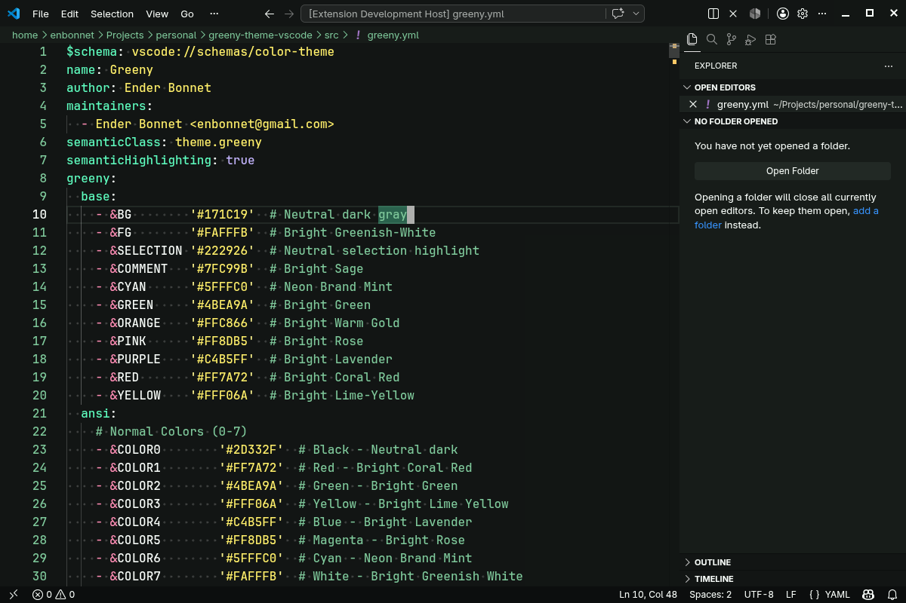

Code in the Glowing Dark.
A beautifully vibrant, greenish dark theme for Visual Studio Code, meticulously optimized for long coding sessions with explicit scoping for 30+ languages.

Two Variants
Choose between the vibrant, high-contrast Base version or the desaturated Soft version for reduced eye strain.
Semantic Highlighting
Enjoy perfect syntax recognition with explicit scoping rules mapped for over 30 modern programming languages and dialects.
View Supported Languages →Eye Comfort
Designed with harmonious greens, mints, and sages to provide a refreshing and calming coding experience during long nights.
Also Available for Ghostty
Love the Green Night palette in your terminal? Check out the Green Night Theme for Ghostty.